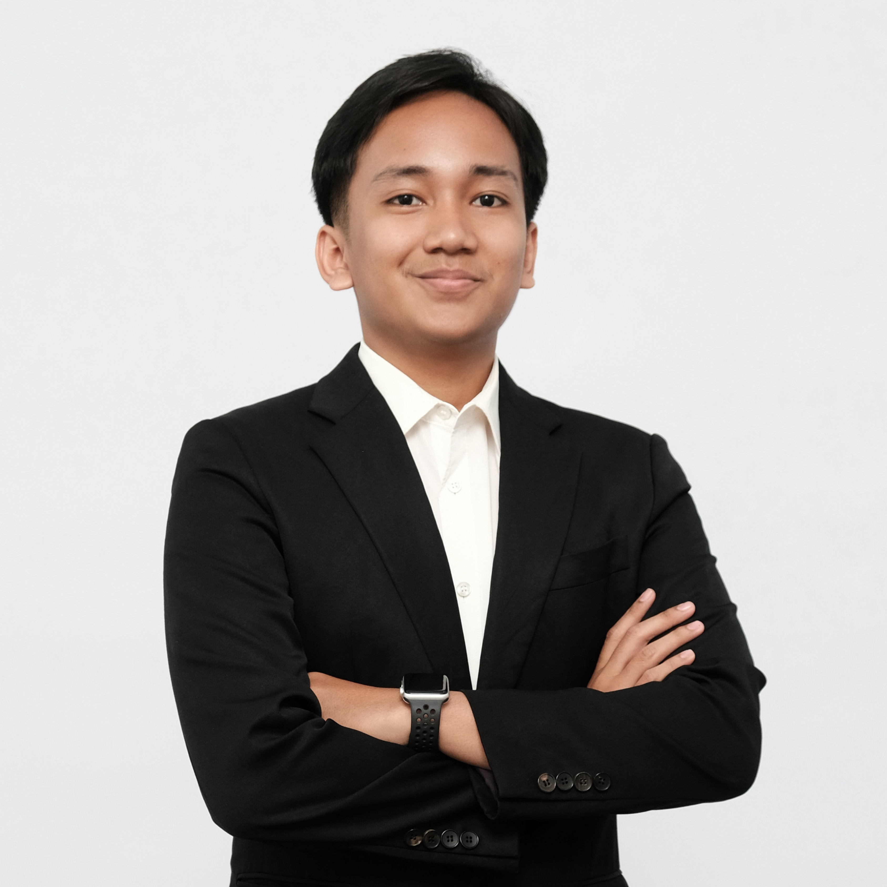

Data & Digital
Working with organizational data, internal dashboards, and digital communication.
Computer Science Undergraduate Student Ambassador Community Leader
Undergraduate Computer Science student at Universitas Sumatera Utara, AIESEC member, and Ministry of Finance intern. I build experience across data, digital communication, student programs, and community initiatives.

I am David Jonathan Simanjuntak, an undergraduate Computer Science student at Universitas Sumatera Utara. My experience spans a Ministry of Finance internship, student ambassador programs, AIESEC, visual communication, and campus events.
I have worked on internal data dashboards, student engagement, digital campaigns, event coordination, and youth mentorship. I enjoy combining analytical thinking, communication, and collaboration to support useful projects and stronger communities.
Working with organizational data, internal dashboards, and digital communication.
Supporting student programs, ambassador initiatives, and environmental activities.
Helping teams plan and deliver campus events and community programs.
Creating visual materials and content for student and community audiences.
Selected professional, student leadership, and community roles from my experience.
Introduce Google's ecosystem, including Gemini, and help students strengthen their digital skills.
Organize educational events, build an inclusive technology community, and serve as a campus liaison.
Share local youth perspectives, create digital content, and support campaigns that connect audiences with the TribunX platform.
Selected from more than 8,000 applicants to promote digital financial inclusion and literacy among university students.
Support app engagement, monthly campaigns, and education about digital transactions.
Manage the participant journey from lead to program completion and support recruitment processes and lead-conversion strategy.
Supported event logistics, participant coordination, and on-site operations for a national tree-planting initiative involving mayors and government delegates from across Indonesia.
Managed and validated organizational data, developed internal dashboards for data visualization, and prepared reports and project documentation.
Collaborated on digital transformation projects and designed user-friendly interfaces for internal applications.
Mentor young people as they explore climate challenges and develop practical local actions related to responsible consumption and climate action.
Supported exchange participant induction, marketing activities, and promotion of Global Volunteer programs and community initiatives.
My formal education and technical foundation.
Universitas Sumatera Utara · Medan, Indonesia
SMK Telkom 1 Medan · Medan, Indonesia
Professional certificates, training, and practical competencies.
Issuer: EF SET
Validity: Issued Oct 2026 · Expires Oct 2029
Credential ID: cert.efset.org/ysqi9g ↗
Issuer: Lembaga Kursus dan Pelatihan (LKP) Karya Prima
Validity: Issued Sep 2023 · Expired Sep 2026
Credential ID: 2908/PR-PK/LKP-KARYAPRIMA/IX/2023
Issuer: SMK Telkom 1 Medan
Validity: Issued Jun 2022 · Expired Aug 2022
Credential ID: 327 SMK-TEL/E.11/VIII/2022
Helped prepare photo shoots by setting up lighting, backdrops, and equipment. Edited and retouched photos to meet client preferences, managed shooting schedules and digital files, and welcomed studio clients.
Issuer: Telkom Indonesia
Validity: Issued May 2023 · Expired May 2026
Credential ID: 202321540197
Skills demonstrated across my studies, internship, student programs, and community work.
Applications and digital platforms built for student life, financial literacy, public service, and community impact.
A detailed project description has not been provided yet.
An interactive gamified handbook for AIESEC Future Leaders Winter Peak 2026. It takes delegates on a playful journey through people, places, and the Sustainable Development Goals (SDGs), sparking curiosity and empowering youth to take action.
A digital transformation instrument for empowering civil servants and managing the DIPA budget transparently, adaptively, and precisely within the Regional Office of DJKN North Sumatra.
A web platform for building smarter financial habits, with transaction tracking, personalized savings goals, monthly reports, educational articles, and interactive quizzes in a user-friendly environment.
A React platform that helps rural communities turn organic waste into clean biogas energy. Features include a digital reward system, carbon-reduction tracking, and energy-production monitoring. Developed for the Pertamina Sobat Bumi 2026 initiative.
Selected programs where I contributed through event strategy, mentorship, design, and coordination.
Directed end-to-end event strategy, reaching 112.3% of the overall KPI target. Led program ideation and stakeholder coordination, with speakers and talents rating their experience 10/10.
Mentored young people exploring climate challenges and developing practical actions around responsible consumption and climate action.
Coordinated technical and logistical needs for the expo and collaborated with other divisions to deliver the program according to its rundown and participant targets.
Supported logistics, participant coordination, and on-site operations for a national initiative involving mayors and government delegates from across Indonesia.
Created promotional materials and documented the event through photography and video for archiving and social media reporting.
I’m open to collaboration, career opportunities, community initiatives, and projects that create meaningful impact. Feel free to reach out.